Deploy Process 빌드, 배포, CDN purge, UI개발 실무
1. dev SVN 구조
1.1 spring 기본폴더 구조
spring - 자바 언어로 웹어플리케이션을 만들기 mvc 패턴 프레임워크
AngularJS, ember - 자바스크립트 mvc 패턴 프레임워크

1.2 dev SVN 폴더 구조(http://svn.ssgadm.com/ssg/)
resources 폴더가 dev svn에 css,img,js 커밋하는 경로
MVC 패턴
- 모델(Model) - 상품명, 가격 등과 같은 데이터를 처리하는 부분
- 컨트롤러(Controller) - 사용자가 어떤 URL을 입력했을때 어떤 페이지를 보여줄껀지를 컨트롤하는 교통경찰 같은놈
- 뷰(View) - 말그대로 브라우저에 보여지는 페이지를 처리하는 부분
사용자가 이벤트 메인 URL로 접속했을때
컨트롤러 RequestMapping에서 URL을 판단하고 return값으로 뷰페이지 jsp 경로를 반환
이벤트 메인 - http://www.ssg.com/event/eventMain.ssg
@RequestMapping(value="/event/eventMain")
public String eventMain(ModelMap model, FrontUserInfo userInfo) throws Exception {
...
...
...
return "event/eventMain";
}
뷰페이지는 html을 토대로 개발 적용되는 부분만 jstl 문법으로 처리
2. 빌드 배포
2.1 빌드와 배포
- 빌드 - target 디렉토리로 필요한 리소스 복사, 프로젝트의 소스코드를 컴파일하고 컴파일된 소스코드와 리소스들을 배포를 위한 패키지(jar,war)로 만드는 단계
- 배포 - 만들어진 패키지를 외부 저장소(dev,qa,stg,prod)에 release하는 단계
- jar,war로 묶는과정 빌드, 서버에 올리는 작업 배포
배포 프로세스
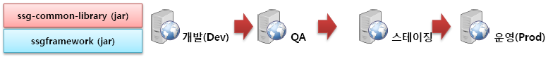
2.2 dev - qa - qa2 - stg - real 서버의 차이점
| 분류 | dev (http://dev-www.ssg.com/) |
qa (http://qa-www.ssg.com/) |
qa2 (http://qa2-www.ssg.com/) |
stg (http://stg-www.ssg.com/) |
real (http://www.ssg.com/) |
|---|---|---|---|---|---|
| 환경 | 개발자 테스트 환경 | qa 및 기획자 확인용 테스트 환경 | 공통상품유닛처럼 프로젝트 기간이 길고 수정되면 사이드이펙트가 큰 프로젝트 테스트용 환경 | 운영과 동일한 데이터 세팅된 테스트 환경 | 실제서비스 환경 |
| 리소스경로 | http://dev-static.ssgcdn.com/ | http://qa-static.ssgcdn.com/ | http://qa-static.ssgcdn.com/ | http://stg-static.ssgcdn.com/ | http://static.ssgcdn.com/ https://sstatic.ssgcdn.com/ (ssl https) |
| 데이터 | 개발자 테스트용 | QA가 입력한 테스트용 | 실서비스 운영 데이터 | 실서비스 운영 데이터 |
2.3 운영서버 1번기 / 2번기란..
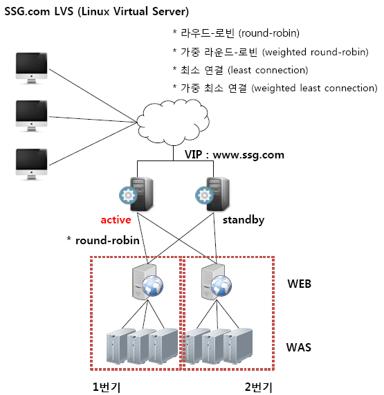
웹애플리케이션 서버에 배포를 하려면 먼저 서버를 중단시켜고 배포 완료 후 서버를 재시작 해야함
만약 서버가 한대고 배포를 위해 중단된다면 사용자는 서버가 없다는 에러를 만나게 된다. qa나 dev 가끔 접속 안될때 있죠. 배포중이라서 그래용
SSG에서는 무중단 서비스를 지원하기 1번기/2번기 나눠서 배포를 진행
LVS(로드밸런싱) 모니터 http://jenkins.ssgadm.com:8080/lvs/dashboard.php
- 1번기가 중단되면 사용자를 2번기로 몰고 2번기가 중단되면 다시 1번기로 요런 역할 하는놈
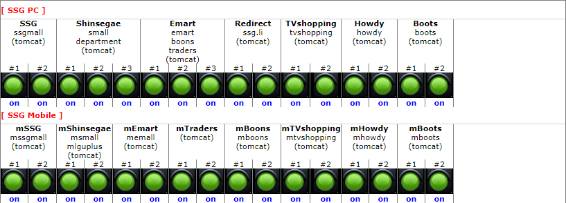
개발자가 1번기 배포되었는데 1번기에서 UI가 깨져요 문의한다면~~ hosts 파일에서 #운영1번기 하단 ip목록 # 제거하면 운영 1번기로 접속됨
step1. 초기파일
#qa2 Qa2 호스트
202.8.174.151 qa2-www.ssg.comqa2-customer.sfcmall.comqa2-customer.sfcmall.emart.com
202.8.174.151 qa2-emart.ssg.com qa2-sfcmall.emart.com qa2-boons.ssg.com qa2-traders.ssg.com qa2-shinsegaemall.ssg.com
202.8.174.151 qa2-www.sfcmall.comqa2-department.ssg.comqa2-dept.sfcmall.comqa2-ferragamo.department.ssg.com
202.8.174.151 qa2-m.ssg.com qa2-mw.customer.sfcmall.com qa2-m.emart.ssg.com qa2-m.shinsegaemall.ssg.com qa2-mw.sfcmall.com
202.8.174.151 qa2-mw.lguplusshopping.co.kr qa2-pay.ssg.com qa2-pay.sfcmall.com qa2-pay.sfcmall.emart.com
202.8.174.151 qa2-pay.lguplusshopping.co.kr qa2-member.ssg.com qa2-member.sfcmall.com, qa2-member.sfcmall.emart.com
202.8.174.151 qa2-member.lguplusshopping.co.kr qa2-uapi.ssglocal.com qa2-api.m.ssg.com
#운영 1번기
202.8.174.31 bo.ssgadm.com pdo.ssgadm.com po.ssgadm.com pco.ssgadm.com
202.8.174.21 cso.ssgadm.com
202.8.173.11 www.ssg.com
202.8.173.31 emart.ssg.com boons.ssg.com traders.ssg.com sfcmall.emart.com
202.8.173.21 shinsegaemall.ssg.com department.ssg.com _www.sfcmall.comdept.sfcmall.com
202.8.173.17 pay.ssg.com pay.sfcmall.emart.com pay.sfcmall.com pay.ssg.com/m pay.sfcmall.com/m
202.8.173.19 member.ssg.com member.sfcmall.emart.com member.sfcmall.com member.ssg.com/m member.sfcmall.com/m
202.8.173.28 m.ssg.com
202.8.173.26 m.emart.ssg.com
202.8.173.35 m.shinsegaemall.ssg.com mw.sfcmall.com mw.lguplusshopping.co.kr m.cn.ssg.com
#origin 이미지서버
#202.8.173.156 static.ssgcdn.com
#운영 2번기
#202.8.174.32 bo.ssgadm.com pdo.ssgadm.com po.ssgadm.com pco.ssgadm.com
#202.8.174.22 cso.ssgadm.com
#202.8.173.12 www.ssg.com
#202.8.173.32 emart.ssg.com boons.ssg.com traders.ssg.com sfcmall.emart.com
#202.8.173.22 shinsegaemall.ssg.com department.ssg.com _www.sfcmall.comdept.sfcmall.com
#202.8.173.18 pay.ssg.com pay.sfcmall.emart.com pay.sfcmall.com pay.ssg.com/m pay.sfcmall.com/m
#202.8.173.20 member.ssg.com member.sfcmall.emart.com member.sfcmall.com member.ssg.com/m member.sfcmall.com/m
#202.8.173.29 m.ssg.com
10.149.186.136 local-emart.ssg.com
#글로벌
127.0.0.01 local-html.global2.ssg.com
202.8.174.167 dev-html.global2.ssg.com
2.4 배포 프로세스 타임테이블 -표준
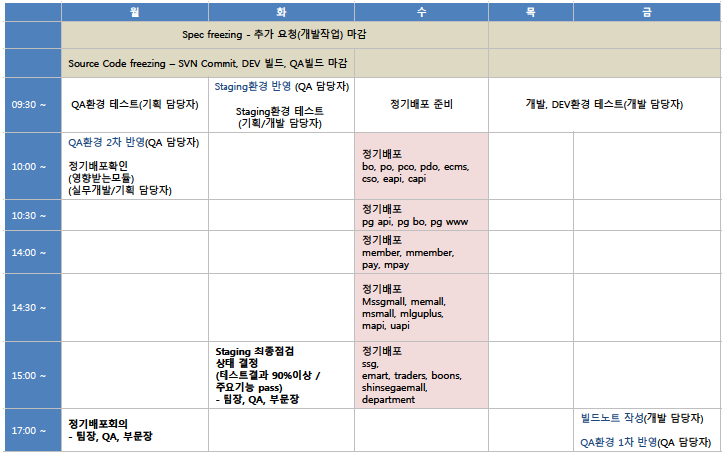
- 원칙적으로 금요일에 dev 빌드 마감/ 이 때 빌드된 패키지가 qa(월), 스테이징(화), 운영(수)에 복사되어 배포만 된다.
- 화요일날 css 수정하고 운영에 올려놔도 금요일 빌드 마감 때 묶였던 css 파일이 수요일에 배포되면 덮어씌워진다.
- ※예외 - 프로모션 이미지 폴더처럼 dev svn에 커밋안하고 바로 ftp로 올리는 리소스는 빌드때 묶이지 않으므로 배포때 덮어씌워지지 않는다.
3. CDN purge
3.1 CDN(Content delivery network)
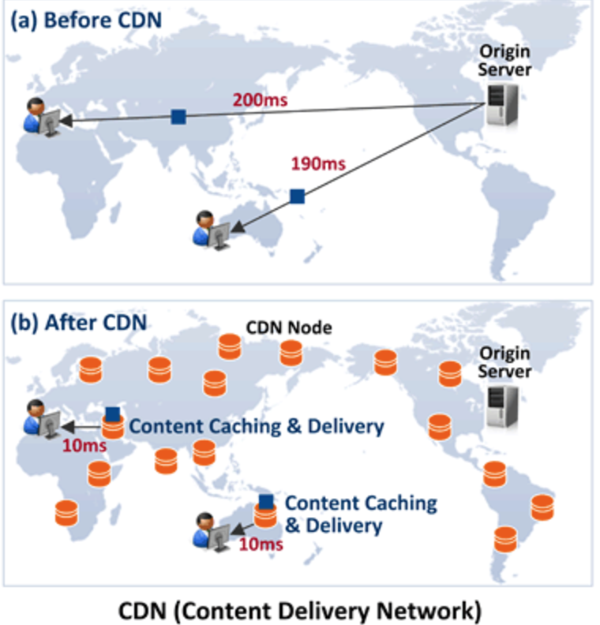
CDN Cache Server는 이용자와 가까운 곳에서 위치하고 Origin Server의 콘텐츠를 캐싱하여
Origin Server를 대신하여 콘텐츠를 이용자에게 다운로드 해 주는 역할을 합니다.
Cache Server는 이용자와의 거리가 Origin Server 보다 가깝기 때문에 빠른 다운로드가 가능
3.2 CDN 동작
콘텐츠 초기요청 등 콘텐츠가 Cache Server에 없는 경우(즉 Origin Server에 새파일이 추가된 경우) : Origin Server로부터 콘텐츠 전송응답 및 캐싱
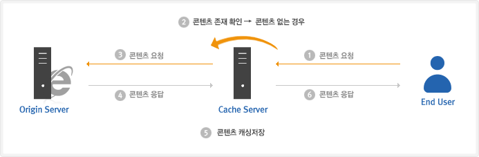
Cache Server에 콘텐츠가 있는 경우 : 캐시 유효기간내인 경우 Origin Server와 통신없이 직접 응답, 캐시 유효기간이 만료되었을 경우 Origin Server에 유효성 검사
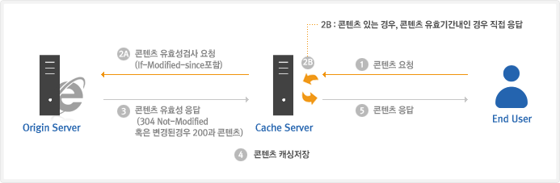
유효성검사 : request header의 수정된 날짜와 response header의 수정된 날짜를 비교하여 같으면 304 상태코드만 전송, 다르면 200 상태코드와 파일 전송
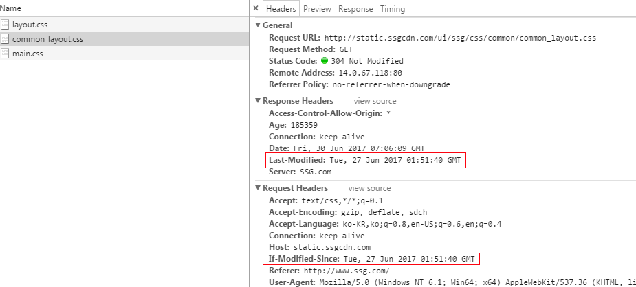
3.3 purge
Origin Server에 콘텐츠를 동일한 이름으로 덮어쓰기 수정한 경우 :
Origin Server에서 동일한 이름의 콘텐츠(css,img,js) 파일을 update한 경우,
업로드한 순간 Origin Server는 변경이 되겠지만,
Cache Server는 Cache 정책에 따라 해당 콘텐츠(css,img,js)의 유효기간(Time To Live)이 지나야 Origin에서 다시 읽어온다고 보시면 됩니다.
Origin Server의 콘텐츠(css,img,js)를 변경하고 이 결과를 Cache Server(Edge Server)에도 반영할 때 사용하는 기능이 Cache Purge 기능입니다.
- Origin Server 경로 - http://ori-static.ssgcdn.com/ui/ssg/css/promotion/purge_test.css
- CDN Server 경로 - http://static.ssgcdn.com/ui/ssg/css/promotion/purge_test.css
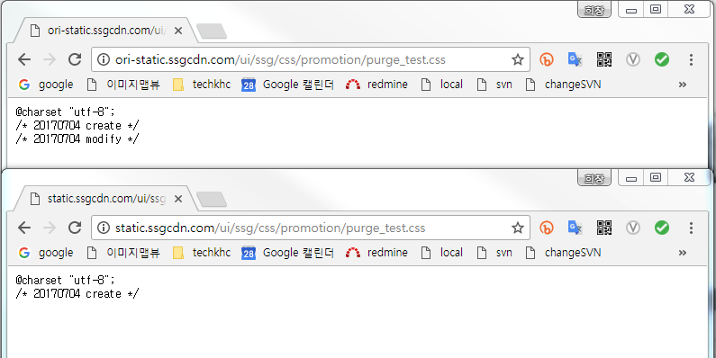
- Cache Purge - http://svn.ssgadm.com/ssgui/ssg-ui/scom/purge.html
결론 덮어쓰기로 수정한 경우 purge를 해야 사용자가 바라보는 CDN 서버에 반영된다.
purge는 운영 서버에 올린 리소스만 해주시면 됩니다.(dev,qa,stg는 테스트용으로 cdn이 적용된게 아님, 파일 올리면 바로 반영됨)
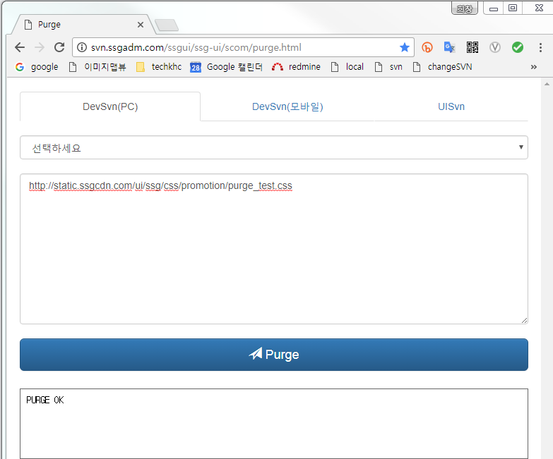
- 자신이 수정한 로그 확인 - 검색창에 사번 또는 레드마인 number로 필터링, modifed 파란색만 purge 하면 됨
- 운영배포날에 본인이 수정한 css가 반드시 반영되어야 한다면 배포전에 리소스 업로드 후 purge, 배포후에 리소스 업로드 후 purge하면 신경쓸일 없음
- dev SVN에는 언제 배포가 되어도 이슈 없는 리소스들만 업로드되어야 합니다.
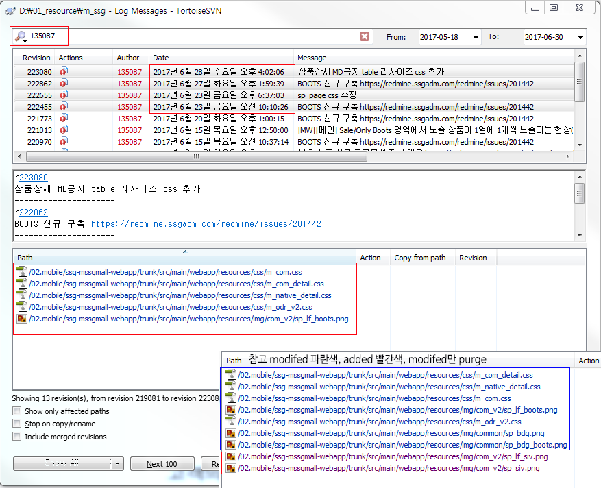
4. UI개발 실무
4.1 개발 배포 이슈 없는 버전 관리 마크업 방법(v1, v2)
step1. 초기파일
step2. 탭메뉴를 3개로 수정해 주세요. css v2로 재정의, 마크업 v2 클래스 추가
step3. 배포 완료 - 원본삭제, .v2 클래스 삭제, 불필요 css 삭제
step4. 탭메뉴를 2개로 수정해 주세요. css v1로 재정의, 마크업 v1 클래스 추가
step5. 배포 완료 - 원본삭제, .v1 클래스 삭제, 불필요 css 삭제
step6. 탭메뉴를 1개로 수정해 주세요. css v2로 재정의, 마크업 v2 클래스 추가(step2번 과정부터 반복 v2 v1 돌려쓰기)
4.2 종류가 다른 UI와 기획의 다양한 요구 대응을 위한 ty 클래스(ty_basic ty_hotdeal ty_special)
일반상세만 부츠일때 탭활성화 색상 파란색으로 바꿔주세요.
4.3 소스코드 오류 체크 후 개발전달
- SSG HTML Validator 크롬 익스텐션 - HTML5 문법검사(http://svn.ssgadm.com/ssgui/01.ssg/pcweb/trunk/guide/ssg_html_validator/ssg_html_validator.html)
- htmlhint - 닫는 태그 tag-pair 검사(http://htmlhint.com/)
- csslint - css 오타만 확인(http://csslint.net/)
- 접근성 - nwax, pajet, K-WAH4.0 등